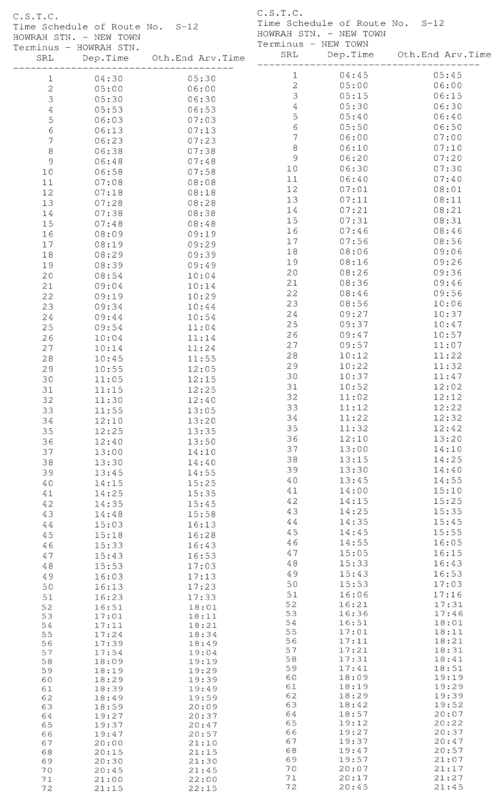

S-12 Kolkata City Bus Timetable
HOWRAH STN. → NEW TOWN and reverse direction departure and terminal arrival times.
Departures 146First 4:30 AMLast 8:45 PMDirections 2
HOWRAH STN. NEW TOWN
| # | Departure | Arrival | Ride |
|---|---|---|---|
| 1 | 4:30 AM | 5:30 AM | 1h 00m |
| 2 | 5:00 AM | 6:00 AM | 1h 00m |
| 3 | 5:30 AM | 6:30 AM | 1h 00m |
| 4 | 5:53 AM | 6:53 AM | 1h 00m |
| 5 | 6:03 AM | 7:03 AM | 1h 00m |
| 6 | 6:13 AM | 7:13 AM | 1h 00m |
| 7 | 6:23 AM | 7:23 AM | 1h 00m |
| 8 | 6:38 AM | 7:38 AM | 1h 00m |
| 9 | 6:48 AM | 7:48 AM | 1h 00m |
| 10 | 6:58 AM | 7:58 AM | 1h 00m |
| 11 | 7:08 AM | 8:08 AM | 1h 00m |
| 12 | 7:18 AM | 8:18 AM | 1h 00m |
| 13 | 7:28 AM | 8:28 AM | 1h 00m |
| 14 | 7:38 AM | 8:38 AM | 1h 00m |
| 15 | 7:48 AM | 8:48 AM | 1h 00m |
| 16 | 8:09 AM | 9:19 AM | 1h 10m |
| 17 | 8:19 AM | 9:29 AM | 1h 10m |
| 18 | 8:29 AM | 9:39 AM | 1h 10m |
| 19 | 8:39 AM | 9:49 AM | 1h 10m |
| 20 | 8:54 AM | 10:14 AM | 1h 20m |
| 21 | 9:04 AM | 10:24 AM | 1h 20m |
| 22 | 9:19 AM | 10:39 AM | 1h 20m |
| 23 | 9:34 AM | 10:44 AM | 1h 10m |
| 24 | 9:44 AM | 10:54 AM | 1h 10m |
| 25 | 9:54 AM | 11:04 AM | 1h 10m |
| 26 | 10:04 AM | 11:14 AM | 1h 10m |
| 27 | 10:14 AM | 11:24 AM | 1h 10m |
| 28 | 10:45 AM | 11:55 AM | 1h 10m |
| 29 | 10:55 AM | 12:05 PM | 1h 10m |
| 30 | 11:05 AM | 12:15 PM | 1h 10m |
| 31 | 11:15 AM | 12:25 PM | 1h 10m |
| 32 | 11:25 AM | 12:40 PM | 1h 15m |
| 33 | 11:35 AM | 12:50 PM | 1h 15m |
| 34 | 12:10 PM | 1:20 PM | 1h 10m |
| 35 | 12:25 PM | 1:35 PM | 1h 10m |
| 36 | 12:40 PM | 1:50 PM | 1h 10m |
| 37 | 1:00 PM | 2:10 PM | 1h 10m |
| 38 | 1:10 PM | 2:20 PM | 1h 10m |
| 39 | 1:20 PM | 2:30 PM | 1h 10m |
| 40 | 2:05 PM | 2:55 PM | 50m |
| 41 | 2:15 PM | 3:25 PM | 1h 10m |
| 42 | 2:25 PM | 3:35 PM | 1h 10m |
| 43 | 2:35 PM | 3:45 PM | 1h 10m |
| 44 | 2:48 PM | 3:58 PM | 1h 10m |
| 45 | 3:03 PM | 4:13 PM | 1h 10m |
| 46 | 3:18 PM | 4:28 PM | 1h 10m |
| 47 | 3:33 PM | 4:43 PM | 1h 10m |
| 48 | 3:43 PM | 4:53 PM | 1h 10m |
| 49 | 3:53 PM | 5:03 PM | 1h 10m |
| 50 | 4:03 PM | 5:13 PM | 1h 10m |
| 51 | 4:13 PM | 5:23 PM | 1h 10m |
| 52 | 4:23 PM | 5:33 PM | 1h 10m |
| 53 | 4:51 PM | 6:01 PM | 1h 10m |
| 54 | 5:01 PM | 6:11 PM | 1h 10m |
| 55 | 5:11 PM | 6:21 PM | 1h 10m |
| 56 | 5:24 PM | 6:34 PM | 1h 10m |
| 57 | 5:39 PM | 6:49 PM | 1h 10m |
| 58 | 5:54 PM | 7:04 PM | 1h 10m |
| 59 | 6:09 PM | 7:19 PM | 1h 10m |
| 60 | 6:19 PM | 7:29 PM | 1h 10m |
| 61 | 6:39 PM | 7:39 PM | 1h 00m |
| 62 | 6:49 PM | 7:49 PM | 1h 00m |
| 63 | 6:59 PM | 7:59 PM | 1h 00m |
| 64 | 7:09 PM | 8:09 PM | 1h 00m |
| 65 | 7:20 PM | 8:37 PM | 1h 17m |
| 66 | 7:37 PM | 8:47 PM | 1h 10m |
| 67 | 7:47 PM | 9:00 PM | 1h 13m |
| 68 | 8:00 PM | 9:15 PM | 1h 15m |
| 69 | 8:15 PM | 9:30 PM | 1h 15m |
| 70 | 8:30 PM | 9:45 PM | 1h 15m |
| 71 | 8:45 PM | 10:00 PM | 1h 15m |
| 72 | 9:00 PM | 10:15 PM | 1h 15m |
| 73 | 9:15 PM | 10:30 PM | 1h 15m |
NEW TOWN HOWRAH STN.
| # | Departure | Arrival | Ride |
|---|---|---|---|
| 1 | 4:45 AM | 5:45 AM | 1h 00m |
| 2 | 5:00 AM | 6:00 AM | 1h 00m |
| 3 | 5:15 AM | 6:15 AM | 1h 00m |
| 4 | 5:30 AM | 6:30 AM | 1h 00m |
| 5 | 5:40 AM | 6:40 AM | 1h 00m |
| 6 | 5:50 AM | 6:50 AM | 1h 00m |
| 7 | 6:00 AM | 7:00 AM | 1h 00m |
| 8 | 6:10 AM | 7:10 AM | 1h 00m |
| 9 | 6:20 AM | 7:20 AM | 1h 00m |
| 10 | 6:30 AM | 7:30 AM | 1h 00m |
| 11 | 6:40 AM | 7:40 AM | 1h 00m |
| 12 | 7:01 AM | 8:01 AM | 1h 00m |
| 13 | 7:11 AM | 8:11 AM | 1h 00m |
| 14 | 7:21 AM | 8:21 AM | 1h 00m |
| 15 | 7:31 AM | 8:31 AM | 1h 00m |
| 16 | 7:41 AM | 8:41 AM | 1h 00m |
| 17 | 7:56 AM | 8:56 AM | 1h 00m |
| 18 | 8:06 AM | 9:06 AM | 1h 00m |
| 19 | 8:16 AM | 9:16 AM | 1h 00m |
| 20 | 8:26 AM | 9:26 AM | 1h 00m |
| 21 | 8:36 AM | 9:36 AM | 1h 00m |
| 22 | 8:46 AM | 9:46 AM | 1h 00m |
| 23 | 8:56 AM | 9:56 AM | 1h 00m |
| 24 | 9:17 AM | 10:07 AM | 50m |
| 25 | 9:37 AM | 10:17 AM | 40m |
| 26 | 9:47 AM | 10:37 AM | 50m |
| 27 | 9:57 AM | 10:57 AM | 1h 00m |
| 28 | 10:12 AM | 11:07 AM | 55m |
| 29 | 10:22 AM | 11:22 AM | 1h 00m |
| 30 | 10:37 AM | 11:37 AM | 1h 00m |
| 31 | 10:52 AM | 11:52 AM | 1h 00m |
| 32 | 11:02 AM | 12:02 PM | 1h 00m |
| 33 | 11:12 AM | 12:12 PM | 1h 00m |
| 34 | 11:22 AM | 12:22 PM | 1h 00m |
| 35 | 11:32 AM | 12:32 PM | 1h 00m |
| 36 | 12:10 PM | 1:20 PM | 1h 10m |
| 37 | 1:00 PM | 2:10 PM | 1h 10m |
| 38 | 1:15 PM | 2:25 PM | 1h 10m |
| 39 | 1:30 PM | 2:40 PM | 1h 10m |
| 40 | 1:45 PM | 2:55 PM | 1h 10m |
| 41 | 2:00 PM | 3:00 PM | 1h 00m |
| 42 | 2:15 PM | 3:15 PM | 1h 00m |
| 43 | 2:25 PM | 3:25 PM | 1h 00m |
| 44 | 2:35 PM | 3:35 PM | 1h 00m |
| 45 | 2:45 PM | 3:45 PM | 1h 00m |
| 46 | 2:55 PM | 3:55 PM | 1h 00m |
| 47 | 3:05 PM | 4:05 PM | 1h 00m |
| 48 | 3:15 PM | 4:15 PM | 1h 00m |
| 49 | 3:33 PM | 4:43 PM | 1h 10m |
| 50 | 3:43 PM | 4:53 PM | 1h 10m |
| 51 | 3:53 PM | 5:03 PM | 1h 10m |
| 52 | 4:11 PM | 5:16 PM | 1h 05m |
| 53 | 4:36 PM | 5:31 PM | 55m |
| 54 | 4:51 PM | 5:46 PM | 55m |
| 55 | 5:01 PM | 6:01 PM | 1h 00m |
| 56 | 5:11 PM | 6:11 PM | 1h 00m |
| 57 | 5:21 PM | 6:21 PM | 1h 00m |
| 58 | 5:31 PM | 6:31 PM | 1h 00m |
| 59 | 5:41 PM | 6:41 PM | 1h 00m |
| 60 | 5:51 PM | 6:51 PM | 1h 00m |
| 61 | 6:09 PM | 7:09 PM | 1h 00m |
| 62 | 6:19 PM | 7:19 PM | 1h 00m |
| 63 | 6:29 PM | 7:39 PM | 1h 10m |
| 64 | 6:42 PM | 7:52 PM | 1h 10m |
| 65 | 6:57 PM | 8:07 PM | 1h 10m |
| 66 | 7:12 PM | 8:22 PM | 1h 10m |
| 67 | 7:27 PM | 8:37 PM | 1h 10m |
| 68 | 7:37 PM | 8:47 PM | 1h 10m |
| 69 | 7:47 PM | 8:57 PM | 1h 10m |
| 70 | 7:57 PM | 9:07 PM | 1h 10m |
| 71 | 8:17 PM | 9:17 PM | 1h 00m |
| 72 | 8:30 PM | 9:27 PM | 57m |
| 73 | 8:45 PM | 9:45 PM | 1h 00m |
Official schedule source
Source: West Bengal Transport Department / CSTC timetable image supplied for this route.
Schedule data imported on 2026-10-05. Timings may change; confirm at the bus stand or with the operator before travel.
← All Kolkata city bus routes

S-12 bus timetable FAQs
What time does S-12 bus start?
The first listed departure for this route is 4:30 AM. The last listed departure in the supplied schedule is 8:45 PM.
Does this page show both directions?
Yes. This page lists the official CSTC schedule for both directions where both direction records are available.
Are these timings official?
The source supplied for this page is the CSTC/West Bengal Transport schedule image. Timings can change, so confirm before travelling.